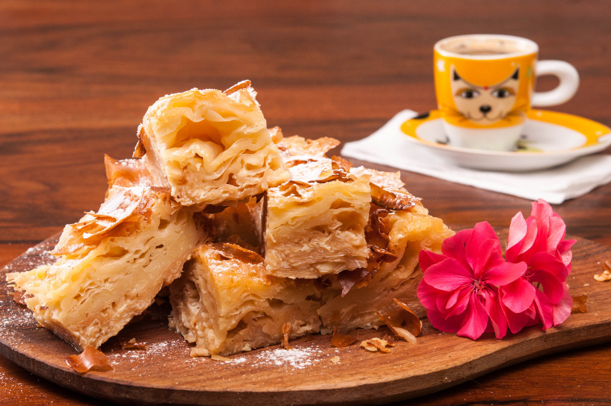

Рецептата за млечна баница е една от класическите рецепти за баница от българската национална кухня. Млечната баница е една вкусна сладка баница, която е много подходяща, както за семейна закуска, така и за лек десерт, с който можете да завършите всяко меню. Млечната баница е много сочна и носи вкуса на кухнята на баба, точно онзи вкус, който не искаме да забравяме и искаме да предадем на следващите поколения.
📖
Лесна
⏱️
60 мин.
🍴
12